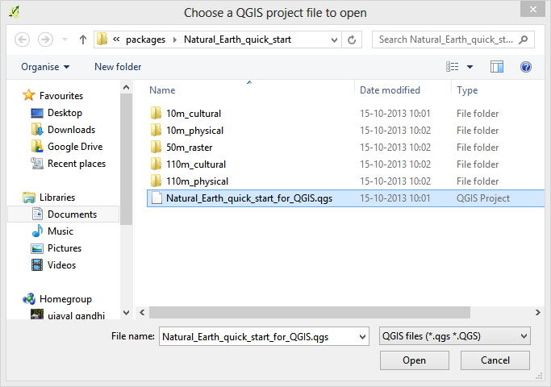
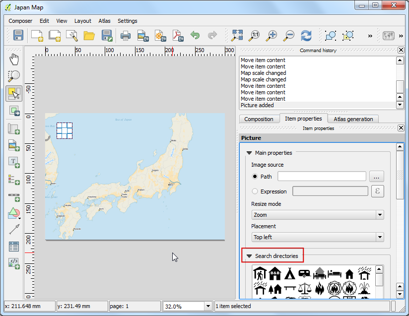

Teemme kartan
[ Download PDF A4 Letter ]
Usein tulee tehtäväksi kartta joka voidaan tulostaa tai julkaista. QGIS omaa tehokkaan työkalun nimeltään Tulosteen muodostus joka mahdollistaa kerätä ja paketoida karttatasosi kartan luomiseksi.
Katsaus tehtävään
Opas näyttää kuinka luoda Japanin kartta jossa normaalit elementit kuten pohjoisnuoli, mittakaavajana, selite ja otsikko.
Hanki tiedot
Käytämme Natural Earth tietojoukkoat - erityisesti Natural Earth Quick Start Kit dataa joka tulee kauniisti tyylitettynä globaaleina tasoina jotka voidaan suoraan ladata QGIS ohjelmaan.
Lataa Natural Earth Quickstart Kit.
Tietojen lähde [NATURALEARTH]
Menettely
Lataa ja pura Natural Earth Quick Start Kit data. Avaa QGIS. Klikkaa .

Selaile hakemistoon jonne olet purkanut Natural Earth tiedot. Sinun tulisi nähdä siellä tiedosto Natural_Earth_quick_start_for_QGIS.qgs. Tämä on projektitiedosto joka sisältää tyylitiedostot QGIS dokumentti formaatissa. Valise tiedosto ja klikkaa Avaa.

Näet paljon tasoja sisällysluettelossa ja tyylitellyn maailman kartan QGIS karttapohjalla. Jos näet virheilmoituksen karttapohjan yläreunassa, klikkaa ristiä sen oikeassa reunassa sulkeaksesi ilmoituksen.

Tässä oppaassa teemme Japanin kartan. Klikkaa Lähennä näppäintä ja piirrä suorakulmio Japanin ympärille lähentäääksesi alueelle.

Kun olet saanut kiinnostuksen alueen keskelle, klikkaa Uusi tulosteen muodostus näppäintä. Sen löytää myös valikoista .

Sinua pyydetään antamaan otsikko muodostajalle. Anna ‘Japanin kartta’ ja klikkaa Ok.

Tulosteen muodostuksen ikkunassa, klikkaa Näytä kokonaan näyttääksesi koko asettelun laajuuden.

Nyt meidän tulee tuoda karttanäyttö, jonka näemme QGIS karttapohjalla, tälle tasolle. Klikkaa Lisää uusi kartta näppäintä. Tämä työkalu löytyy myös valikoista: Pohjapiirros –> Lisää kartta.

Kun Lisää uusi kartta näppäin on aktiivinen, pidä hiiren vasenta näppäintä alaspainettuna ja tee suorakulmio vetämällä mihin haluat sijoittaa kartan.

Huomaat suorakulmioikkunan hahmottuvan kartalla QGIS karttapohjalta. Koska haluamme kartamme peittävän koko laajuudelta asettelun, vedä suorakumion kulmista reunoille.

Säätäkäämme zoomaustasoa annetulle kartalle. Klikkaa Nimikkeen ominaisuudet välilehteä ja anna Mittakaava kenttään arvo 3500000 .

Nyt lisäämme pohjoisnuolen kartalle. Tulosteen muodostus sisältää mukavan joukon karttoihin liittyviä kuvia - mukaan lukien useita tyyppejä Pohjoisnuolia. Klikkaa .

Painamalla vasen hiiren näppäin alas, piirrä suorakulmio karttapohjan yläoikealle .

Klikkaa Nimikkeen ominaisuudet välilehteä oikean puoleisessa paneelissa ja laajenna kappalevalinta Etsi kansioista ja valitse haluamasi pohjoisnuoli.

Seuraavaksi vieritä oikeaa panelia alaspäin ja poista merkkaus Tausta vaihtoehdolta. Tämä tekee kuvasta läpinäkyvän.

Nyt lisäämme mittakaavajanan. Klikkaa valikosta .

Klikkaa karttapohjalla minne haluat sijoittaa mittakaavajanan. Välilehdeltä Nimikkeen ominaisuudet valitse Pääominaisuuksista Tyyli joka sopii tarkoituksiisi. Muuta myös yksiköiksi Kartta yksikkö ja anna Nimiöksi ‘asteet’ koska karttayksiköt ovat asteina. Läpinäkyvyys tulee myös asettaa poistamalla merkkaus Tausta vaihtoehdolta.

Nyt lisäämme selitteen kartalle. Klikkaa .

Klikkaa karttapohjalla minne haluat sijoittaa selitteen. Koska tasoluettelomme on valtava, näet suuren laatikon jossa kaikki tasot esiintyvät.

Klikkaa Nimikkeen ominaisuudet välilehteä ja valitse tasot joita emme halua selitteeseen. Klikkaa - näppäintä poistaaksesi ne selitteestä.

Tämän kartan tarkoitukseen säilytämme seliteen tietoina vain viisi tasoa kuten näet alla. Klikkaa Muokkaa näppäintä ja muuta seliteen jäsenten näytettävää tekstiä luettavammaksi.

Nyt on aika otsikoida karttamme. Klikkaa .

Klikkaa kartalla ja piirrä vetäen minne otsikko sijoitetaan. Välilehdellä Nimikkeen ominaisuudet laajenna kappale Nimiö ja anna teksti. Voimme antaa tekstin myös HTML muodossa, klikkaa laatikkoa Hahmota HTML muodossa jotta muodostaja osaa tulkita HTML tagit.

Kun olet tyytyväinen kartaan, voit tallentaa sen kuvana, PDF tai SVG tiedostona. Tässä oppaassa tallennamme sen kuvana.

Tallenna kuva haluamassasi formaatissa. Alla on tallennettu PNG kuvana.